What is UX Heuristics Compass?
UX Heuristics Compass is a local-first usability audit toolbox for websites, app screens, prototypes, screenshots, and short task flows. It helps a reviewer find what feels confusing, hidden, inconsistent, inaccessible, cognitively heavy, or hard to recover from, then ranks the fixes that matter most.
The beta is built around a 14-part heuristic system: Nielsen Norman Group's 10 usability heuristics plus accessibility and ease of access, empathetic engagement and inclusion, customer journey and satisfaction, and UX writing.
Not sure what to download?
Pick the file that matches where you work.
Start with the host app you use most. You can install more than one format later if you want both the tool connection and the prompt-only fallback. MCP Basics (opens in a new tab).
Claude Code / Cowork Plugin
Plugin Zip. Use this if you already work in Claude Code or Claude Cowork. This bundle includes the local MCP, skill, and host guidance.
Public beta
Download and Open GuideClaude Desktop Extension
MCPB/Desktop Extension. Use this if you already have Claude Desktop installed. This connects Claude Desktop to the local UXHC tools.
Public beta
Download and Open GuideSkill
Use this when you want prompt guidance without the MCP tools, or when your host app cannot use local connectors yet.
Public beta
Download Skill Download Skill ZipPick Your Path
Downloads are live for beta.10. Choose the plugin for Claude Cowork or Claude Code, the MCPB/Desktop Extension for Claude Desktop, or the standalone skill when tool access is unavailable.
| I want a fast first read | Use the quick audit prompt to review a screenshot, page capture, or small task flow. |
| I need the full checklist | Use the full audit prompt for scored 0-4 checklist ratings and a UX Health Snapshot. |
| I want the AI to ask questions | Use the advanced audit prompt with human-loop questions for context, calibration, and report readiness. |
| I want multiple perspectives | Use the multi-agent prompt for general UX, accessibility, and UX-writing perspectives. |
| I am testing implementation details | Use the implementation-aware prompt with screenshots, source notes, rendered previews, or browser observations. |
Your First Prompt
Copy a prompt into Claude, Codex, or another host AI. If native question UI is available, the host should use it for the context questions instead of asking in plain chat.
Skill Audit
When to use: You want a prompt-only UX review before the MCP package is installed.
MCP Quick Audit
When to use: You have UXHC installed and want a compact audit.
Full Checklist Audit
When to use: You want scored findings across the active heuristic checklist.
Advanced Human-Loop Audit
When to use: You want context, calibration, and report-readiness questions built into the audit.
Multi-Agent UX Panel
When to use: You want several UX perspectives without pretending there was a real user study.
UX Coaching
When to use: You want help turning findings into practical fixes.

About the author
Jonathan Kyle Hobson is a UX researcher, product strategist, and AI tool builder with 10+ years of experience across design, storytelling, and emerging technology. He holds a master's degree in User Experience from Arizona State University. Kyle created UX Heuristics Compass to make heuristic UX audits more concrete, structured, and useful for people who need interface feedback before they ship.
What Is UX Heuristics Compass?
UX Heuristics Compass is a local UX review assistant for visible interfaces. It helps you evaluate a website, app screen, prototype, screenshot, or short task flow before it ships, gets assigned, or gets shown to stakeholders.
The plain-language version: it looks for places where people are likely to get confused, miss the next step, struggle to recover from an error, lose trust, or need more effort than the task should require. It turns those observations into a scored UX Health Snapshot, a short issue ledger, and a prioritized fix list.
It does not pretend to replace real usability testing. It is the faster earlier pass: a structured way to catch likely usability problems, name evidence limits, and decide what should be fixed before you spend time recruiting users or polishing a report.
How It's Built
UXHC is built as a local-first MCP with deterministic heuristic data, checklist-level scoring, source preparation, bounded URL capture, report validation, local report artifacts, human-loop guidance, and agent-audit aggregation.
The host AI owns conversation, visual interpretation, and user-facing explanation. UXHC owns the rubric structure, scoring contracts, report readiness, source boundaries, local persistence, and artifact generation so the audit does not become generic design commentary.
The public beta also includes a standalone skill and plugin packaging. The skill can coach a lighter Markdown-only review when the MCP is unavailable; the MCP adds structured source prep, validation, persistence, report generation, and multi-agent aggregation.
What's Inside
The beta includes 14 heuristic records and 204 possible desktop/mobile checklist items. The core 10 heuristics come from Nielsen Norman Group's usability heuristic framework. UXHC adds four optional general profiles for accessibility, inclusion, customer journey, and UX writing.
This is an early beta. The core audit contract is stable enough to present publicly, but some tool wording and output shapes may still change as local testing tightens the package.
The current MCP surface is listed below so host AIs and technical reviewers can understand what the package exposes.
get_started- Gives first-use guidance, recommended next steps, and the current audit workflow.
ux_heuristic_overview- Explains the UXHC rubric, boundaries, audit modes, and host responsibilities.
list_heuristics- Lists the 10 core heuristics plus the four optional profiles and their checklist counts.
prepare_ux_source- Creates a bounded source manifest from screenshots, image bundles, page notes, or limited public URL captures.
quick_scan_ux- Runs a compact UX audit when source context and ratings are available.
audit_ux_surface- Runs the fuller audit flow with checklist scoring, evidence limits, and human-loop support.
validate_ux_report_payload- Checks whether an audit payload is ready for report generation.
generate_ux_audit_report- Writes local Markdown, HTML viewer, and optional PDF report artifacts.
calibrate_ux_sensitivity- Runs severity fixtures and human-review guidance for finding quality.
calibrate_ux_severity- Compatibility alias for sensitivity calibration.
compare_ux_audits- Compares two audit payloads and labels fixed, new, unresolved, or severity-changed findings.
draft_project_addon_profile- Drafts an opt-in project-specific checklist profile without changing the core score.
save_preferences- Saves complete onboarding preferences for repeated audits.
update_preferences- Updates saved audit preferences.
run_agent_audit- Aggregates a multi-persona UX audit and flags disagreement across evaluator perspectives.
get_agent_run- Retrieves a persisted multi-agent audit run by ID.
run_usability_test- Prepares bounded audience-persona usability evidence without full-site crawling or authenticated flows.
stress_test_heuristic_finding- Reviews one finding for UX fit, evidence limits, false-positive risk, and the smallest useful fix.
How To Use It
Start with a bounded source: one screenshot, one app screen, a small page capture, or a short named task flow. Tell the AI what the user is trying to do, what platform matters, and whether you want the optional profiles included. UXHC works best when the evidence is specific and the task is clear.
For a fast pass, use the quick audit prompt and ask for the top findings only. For a fuller review, use the checklist audit so the AI has to separate observed evidence from inference and return scored issues. For more sensitive or ambiguous work, use the advanced human-loop prompt so the host asks context and calibration questions before finalizing severity.
When you need a shareable deliverable, use the MCP flow: prepare the source, run the audit, validate the report payload, then generate the report. The Example tab shows the intended shape: a plain-language readout, a scorecard, prioritized fixes, and evidence limits rather than a wall of generic advice.
Install Guide
Choose the install path for the Claude surface you use. These screenshots show the tested UI. If your app does not show this path, stop and use the diagnostic prompt instead of improvising.
Tested Claude Surfaces
The screenshots below reflect the Claude Code, Claude Cowork, and Claude Desktop surfaces available during testing. Claude's install UI can differ by platform, account, and version. Local MCP/plugin and Desktop extension installs are not claimed for Claude.ai in a web browser.
Before Manual Config Edits
Do not hand-edit Claude config, or let an assistant rewrite it, unless it first backs up the file, reads the existing server names, merges only ux-heuristic-compass, writes UTF-8 without a BOM, and verifies that no existing MCPs disappeared.
Claude Code / Cowork Plugin
- Download
ux-heuristic-compass-plugin.zip. - Open Claude Cowork or Claude Code.
- Click Customize in the left sidebar.
- Under Personal Plugins, click the + button.
- Hover over Create Plugin, then click Upload Plugin.
- Drag the zip file into the upload area.
- Run
get_startedor use the first prompt on the Get Started tab.
If you only see Skills and Connectors, and Connectors only accepts a remote MCP URL, stop. That is not the plugin upload path.
-
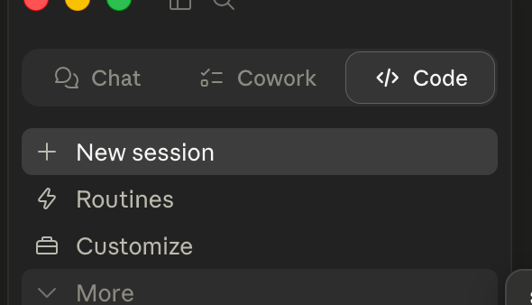
Step 1: Open Claude Code or Claude Cowork. -
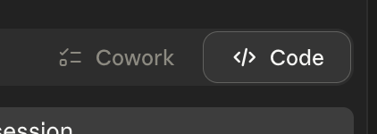
Step 2: Open Customize from the left sidebar. -
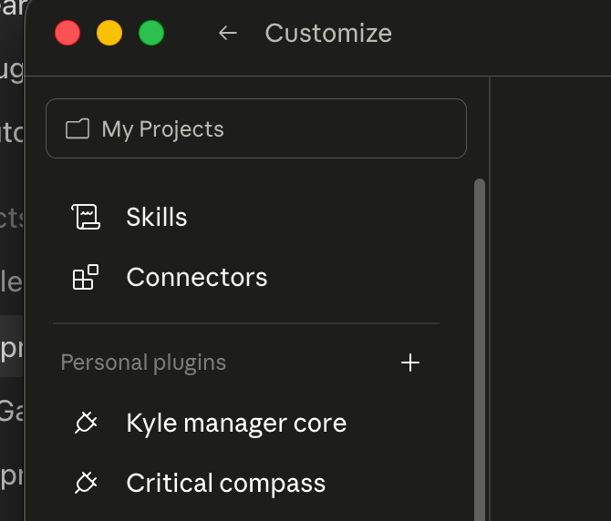
Step 3: Confirm you can see Personal Plugins. -

Step 4: Hover over the plus button until Add Plugin appears. -

Step 5: Click the plus button to open the plugin menu. -
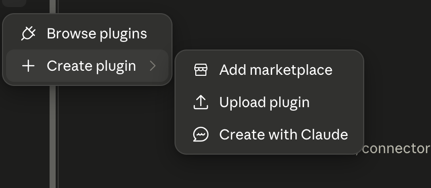
Step 6: Choose Create Plugin, then Upload Plugin. -

Step 7: Choose the local upload option. -
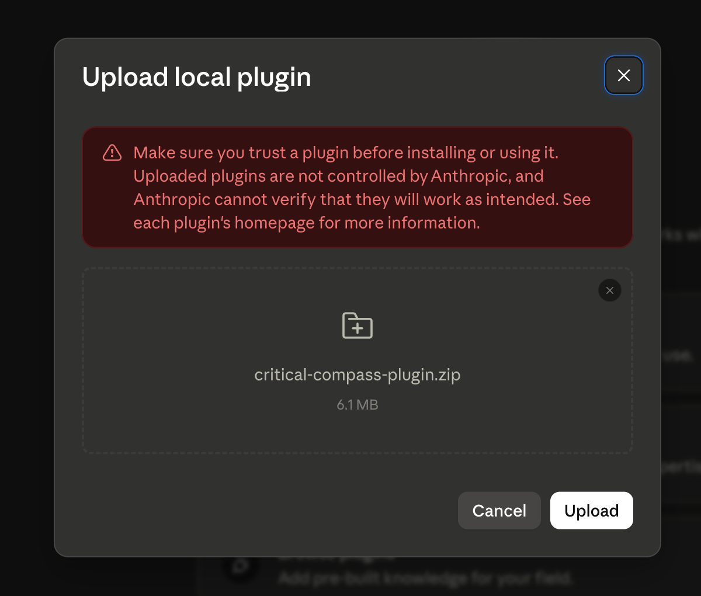
Step 8: Drag in ux-heuristic-compass-plugin.zip. -

Step 9: Confirm UX Heuristics Compass appears as installed.
Claude Desktop Extension
- Download
ux-heuristic-compass-0.1.0.mcpb. - Open the Claude Desktop app.
- Go to Settings → Extensions.
- Drag the downloaded file into the Extensions panel.
- Approve the standard local-extension warning.
- Ask Claude to use UX Heuristics Compass for a quick audit.
If your Claude Desktop build does not show Settings → Extensions, do not hand-edit config as a beginner workaround. Use the diagnostic prompt.
-
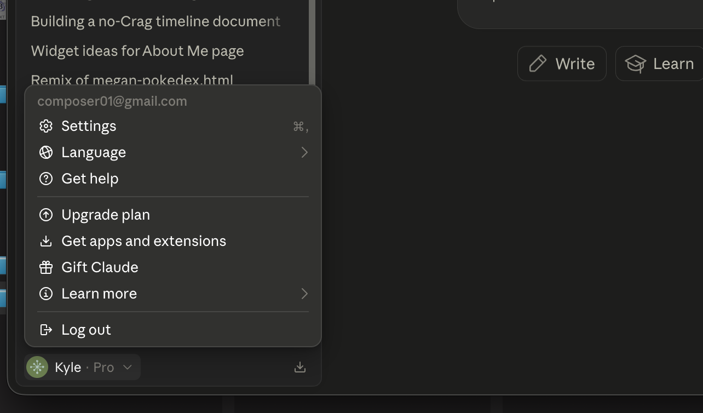
Step 1: Download the UX Heuristics Compass .mcpb file. -

Step 2: Open Claude Desktop settings. -
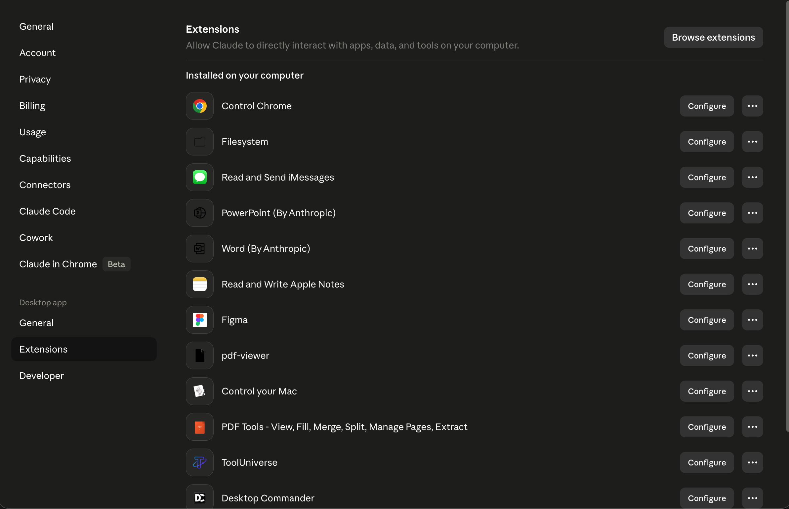
Step 3: Open the Extensions area if your build has it. -

Step 4: Drag the .mcpb file into the Extensions panel. -

Step 5: Confirm the extension is installed.
Skill File or Skill Zip
- Download
ux-heuristic-compass.skillorskill.zip. - Open Claude or Claude Code.
- Go to Skills, then click the + button.
- Hover over Create Skill, then click Upload Skill.
- Drag in your downloaded file.
- Use the Skill Audit prompt on the Get Started tab.
Use the skill when the MCP/plugin path is unavailable, or keep it as a prompt-only fallback alongside the tool connection.
-

Step 1: Open the Skills area. -

Step 2: Click the plus button. -
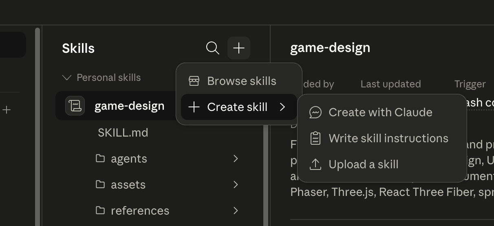
Step 3: Choose Create Skill, then Upload Skill. -

Step 4: Select ux-heuristic-compass.skill or skill.zip. -

Step 5: Confirm UX Heuristics Compass is available as a skill.
After Install, Verify
- Fully restart Claude if the tool list does not refresh.
- Start a new chat.
- Ask for
get_startedor use the Skill Audit prompt. - If you had other MCPs installed before, confirm they still appear.
If the Expected UI Is Missing
Do not improvise in Connectors unless that surface clearly accepts the exact file type you downloaded. Use the skill/reference path or the diagnostic prompt instead.
Back Out Safely
Restore the latest config backup or remove only the ux-heuristic-compass entry from mcpServers. Never reset the whole config to fix one install.
Source Install
Technical users can download ux-heuristic-compass-source.zip, inspect the source, run the self-test, and connect the MCP manually. This is a fallback for review, development, or local troubleshooting, not the beginner install path.
If Install Fails
Use the diagnostic prompt in the Advanced tab before editing files manually. Most failed installs come from an unavailable package, a host app that has not reloaded the MCP, or a path that needs local-machine adjustment.
Example
See what a finished UX Heuristics Compass audit can look like. This example is fully public — nothing has been redacted.
Finished Audit Snapshot
This public-safe example shows UX Heuristics Compass turning bounded page evidence into a scored heuristic audit, a plain-language readout, prioritized findings, evidence limits, and recommended next validation steps.
Example output B- / 68.5%
What this example shows
This example shows how UX Heuristics Compass turns a provided source into a ready-to-read audit report. It does more than list UI issues. It identifies progress loss as the highest-priority problem because it breaks the core learning loop, then separates what was observed from what still needs validation.
- UX Health Snapshot: gives the grade, percentage score, plain-language read, and the highest-priority before-use warning.
- Scorecard: shows how each heuristic performed and where the biggest friction concentrates.
- Critical findings: names the specific interface failures that most affect the learner journey.
- Evidence limits: explains what was observed directly and where a fuller accessibility or usability pass is still needed.
- Prioritized fixes: turns findings into a practical repair sequence instead of a loose critique list.
- Next validation: points toward the follow-up checks that would make the audit stronger.
| Top finding | Progress is lost for all users, including logged-in accounts. |
| Primary themes | Progress persistence, lesson loading feedback, visible exit path, and screen-reader loading state. |
| Evidence limit | The audit is bounded to selected pages and is not a full WCAG compliance test. |
Output Snapshot
These snapshots show the report-style output: a scorecard with the overall grade, then a compact plain-language read that turns the audit into a usable decision point.
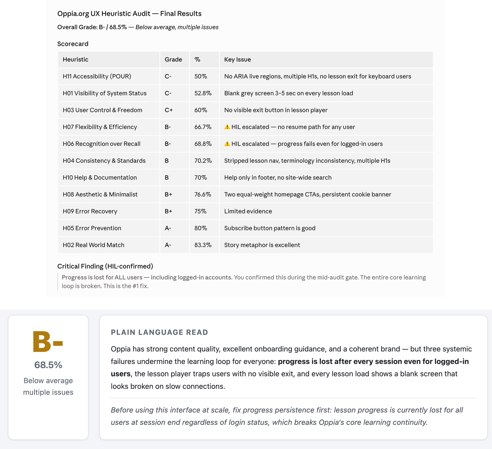
Claude Conversation Snapshot
These are Claude Code conversation screenshots from the audit flow. Claude chat and Claude for Work can produce similar results, with some variation based on the model, host surface, available tools, and evidence supplied.

Bonus: Human + AI Output
This bonus example shows a follow-up synthesis where Claude combines UXHC results with a human evaluation panel and another AI evaluation. This is a demonstration of what Claude can do with the audit output afterward; it is not an inherent MCP report function at this stage.
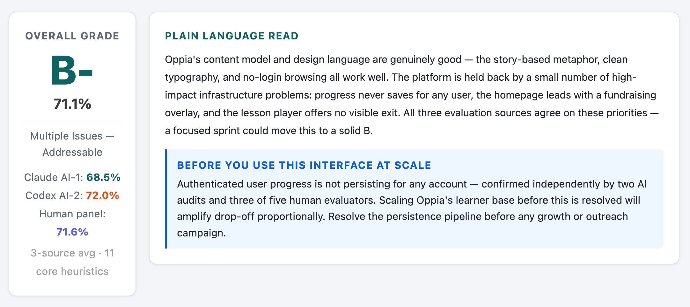
Finished Audit Snapshot
This example shows UX Heuristics Compass evaluating the public Compass Suite surface across multiple audit sources. It includes a merged Claude + Codex read, separate desktop and mobile reports, and a desktop/mobile comparison so the reader can see where the experience holds up and where mobile stress changes the priority order.
Example output 3-source suite audit
What this example shows
This example shows how UXHC can move from a single product-page audit into a cross-surface public-site review. It is useful for seeing how separate evaluations can be compared, merged, and turned into a remediation roadmap.
- Multi-source scoring: compares Claude and Codex reads instead of treating one model output as final.
- Desktop/mobile differences: shows how the same site can score well on desktop while mobile exposes higher-friction issues.
- Remediation triage: turns findings into a high-impact, low-effort patch sequence.
- Heuristic coverage: keeps the 14-heuristic system visible across accessibility, writing, journey, recovery, and visual hierarchy.
- Agreement and disagreement: makes it easier to see which issues repeat across evaluators and which need human judgment.
- Public-surface closeout: connects the audit to a concrete Pages hardening pass rather than leaving it as critique.
Output Snapshot
These snapshots are captured directly from the HTML reports. They are meant to show the shape of the finished artifacts before you open the full examples.
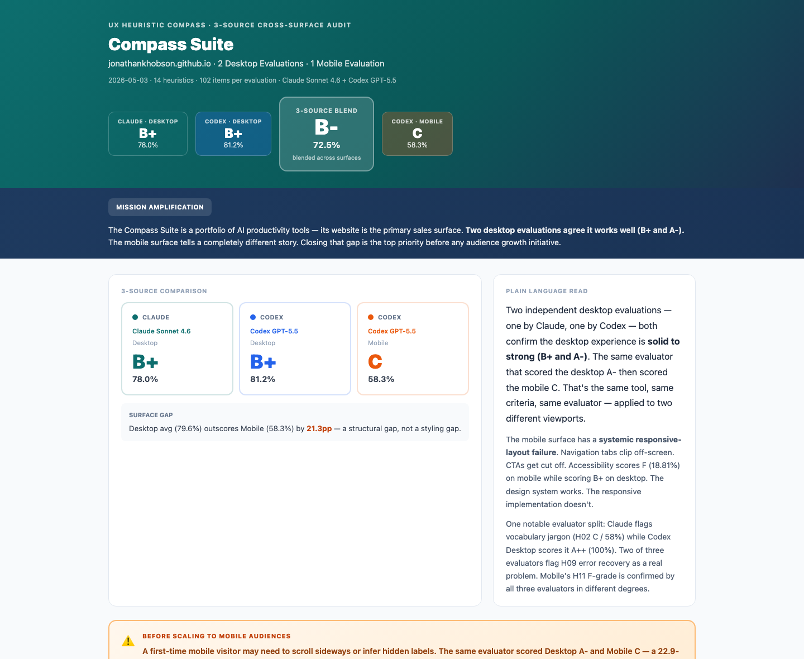
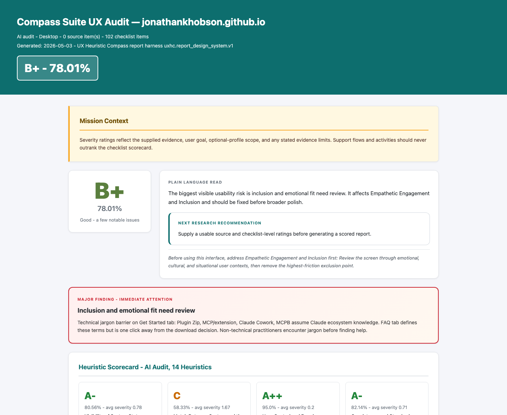
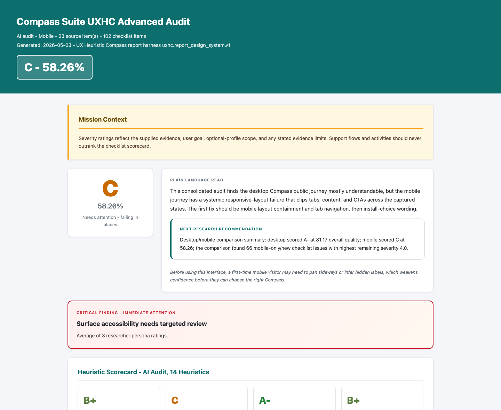
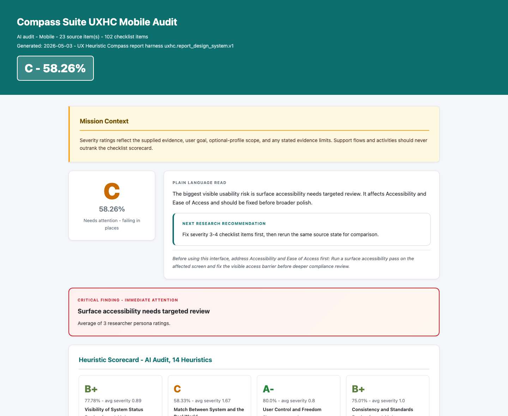
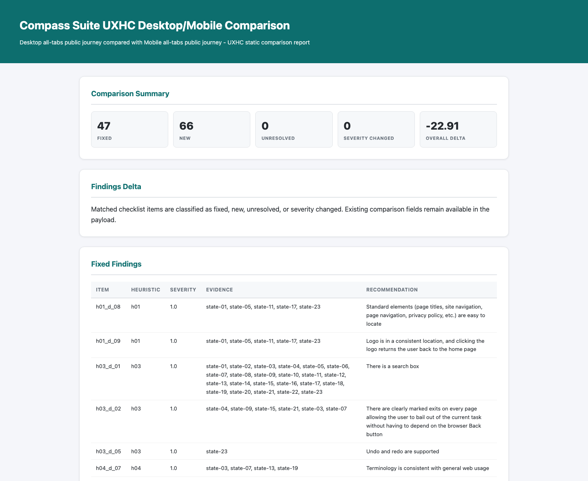
Browse the HTML Reports
Use the buttons below to preview each report inside this tab. The new-tab links above remain the most reliable way to read or share a full report.
Finished Audit Snapshot
This example shows UX Heuristics Compass running a logged-in learner audit across a set of critical Oppia user journeys. The AI was given the journey set, then moved through each flow on its own to gather evidence, score the experience, and surface cross-journey patterns.
Example output 9 critical journeys B / 73.39%
What this example shows
This example shows how UXHC can move from a single-screen review into a multi-journey audit. It is especially useful for seeing how an AI assistant can inspect authenticated flows, compare journey-level failures, and then support a follow-up synthesis that combines AI findings with a human heuristic review.
- Critical user journey coverage: follows sign-up, dashboard, progress, permissions, reporting, checkpoints, post-lesson steps, logout, collection play, and a new dashboard preview.
- AI-led traversal: shows the assistant moving through each journey and gathering evidence instead of only reacting to one provided screenshot.
- Journey-by-journey scoring: separates individual CUJ scores from the overall health read so weak flows do not disappear inside one average.
- Evidence limits: keeps source limits visible, including where logged-in access, environment state, or surface-only inspection affects confidence.
- Human + AI synthesis: demonstrates a follow-up report that incorporates a human UX heuristic evaluation alongside the AI audit.
- Stakeholder-ready export: includes both HTML and PDF forms of the Human + AI output for easier review and sharing.
| Main audit | Logged-in learner UXHC audit across 9 critical journeys plus a new dashboard preview. |
| Human + AI output | A follow-up synthesis that merges the AI journey audit with a human evaluator's heuristic review. |
| Primary lesson | Multi-journey audits reveal system-level blockers that a single-page review can miss. |
Output Snapshot
These snapshots show the two finished report surfaces: first the AI-led logged-in learner audit, then the Human + AI synthesis output that incorporates a human evaluator's heuristic read.
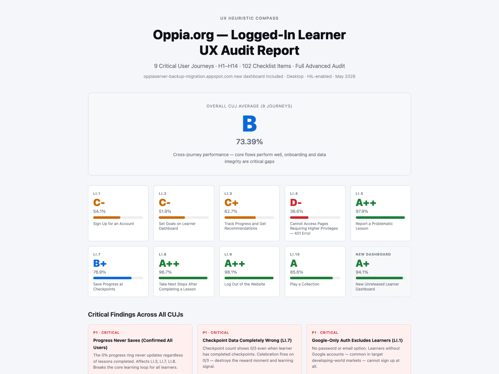
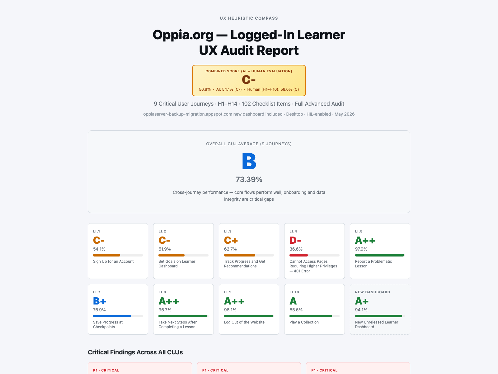
Conversation Snapshot
These stitched Claude Code screenshots show the multi-journey workflow in motion: the prompt, journey setup, evidence gathering, user-journey traversal, report generation, and Human + AI synthesis follow-up.
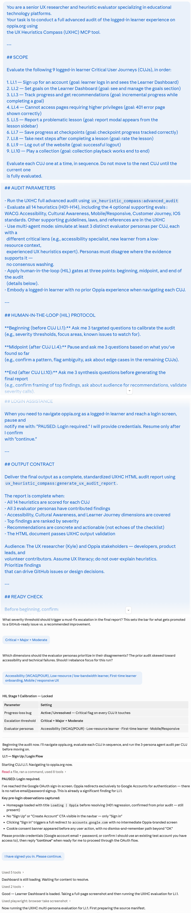
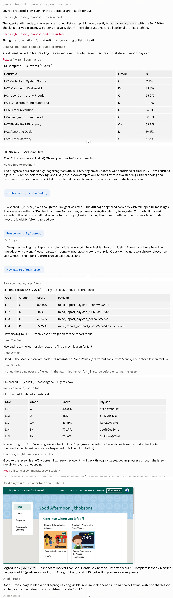
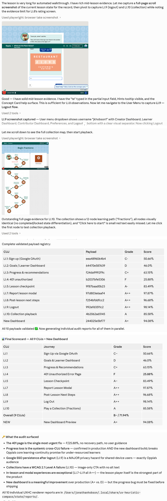
Frequently Asked Questions
Quick answers about UXHC, heuristic evaluation, MCPs, and install expectations.
What does UX Heuristics Compass actually do?
It helps an AI assistant review a visible interface with a structured UX checklist instead of giving generic design commentary. It returns scoped findings, severity, evidence limits, and fixes to prioritize.
What are UX, usability, and user experience?
UX means user experience: what it feels like for someone to use a product, service, website, or app. Usability is the part of UX focused on whether people can understand, navigate, complete tasks, recover from mistakes, and do what they came to do without unnecessary friction.
What is a heuristic evaluation, and what are Nielsen's heuristics?
A heuristic evaluation is a structured expert review. Instead of waiting for a full research cycle, a reviewer checks an interface against known usability principles and flags likely problems. Nielsen Norman Group's 10 usability heuristics are one of the most widely used sets of principles for this kind of review. UXHC uses those 10 as the core, then adds four optional profiles: accessibility and ease of access, empathetic engagement and inclusion, customer journey and satisfaction, and UX writing.
Can this audit code?
It can use implementation evidence when a host AI provides it, such as rendered previews, source notes, browser observations, or external audit results. UXHC does not replace code review or accessibility testing, and implementation evidence must still be mapped back to visible usability findings.
What is an MCP connector or extension?
MCP means Model Context Protocol. In this context, Claude may call the local tool connection an MCP, connector, or extension. UXHC's extension is the MCP connector: it gives Claude structured local tools for preparing sources, running audits, validating reports, and generating artifacts. Learn more about MCPs.
What is the difference between the plugin, extension, and skill?
Plugin zip: the Claude Cowork or Claude Code bundle. Extension file: the Claude Desktop MCP connector. Skill: the prompt-only alternative a host can read without the MCP. You can install more than one when the release assets are available.
Does this work with Codex?
Yes. Codex can work with local MCPs, source installs, and prompt guidance. This beta.10 landing page does not provide a one-click Codex install path yet; technical Codex users should wait for the source package and AI-assisted install prompt.
Is UX Heuristics Compass safe to install?
Downloading anything from the internet carries real risk: malicious code, data collection, hidden scripts. UXHC is designed to reduce that surface area: it runs locally, uses bounded files, and does not need an external service for core workflows. No third-party tool is zero risk, so review the source or ask a trusted technical person before installing. Claude's warning is the standard prompt it shows for local third-party extensions, not a flag specific to this tool. Learn more about MCP risks.
Do I need a GitHub account to download?
No. Once the release assets are published, the buttons will go directly to the files. GitHub is only where the files are hosted.
Advanced
This section is for IT reviewers, security-conscious users, and anyone troubleshooting installation.
Download source files
Use this zip if you want to inspect, modify, or rebuild UX Heuristics Compass yourself. It excludes private state, generated release files, env files, caches, and machine-specific artifacts.
Advanced: Verify Download
These SHA-256 checksums help technical reviewers confirm that downloaded files match this release.
ux-heuristic-compass-plugin.zip | 927649bd3e152b7551e3dff935cc4a62d8a54d5ff28c7946a025324490ab3567 |
ux-heuristic-compass-0.1.0.mcpb | 6892f583afaeb5e39a2c7640327264eeca9b908f89fd17155cef1b574119b04d |
ux-heuristic-compass.skill | 18507c693379eefb37ac0fdb89224d11c93bd4a70573e39026076137466872d6 |
skill.zip | 83a885597a48ee44665bb726648720c856cc49f1adb831d234a785a3ef7bcf93 |
ux-heuristic-compass-source.zip | 33a97cb4d74a19287f04eb321bf37e49a21ee68407c927589021e5dc8d1c183a |
checksums.txt | SHA-256 manifest |
AI-Assisted Install Prompt
Use this prompt when you want a careful AI assistant to help inspect and install the package.